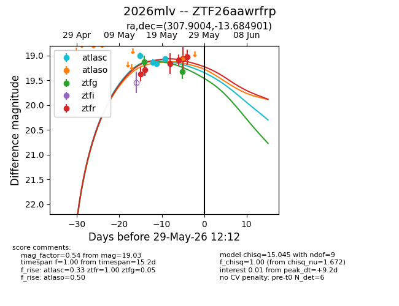
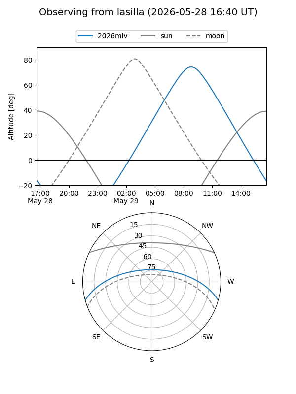
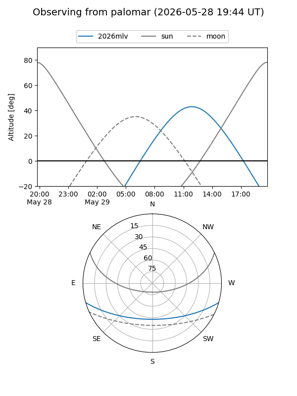
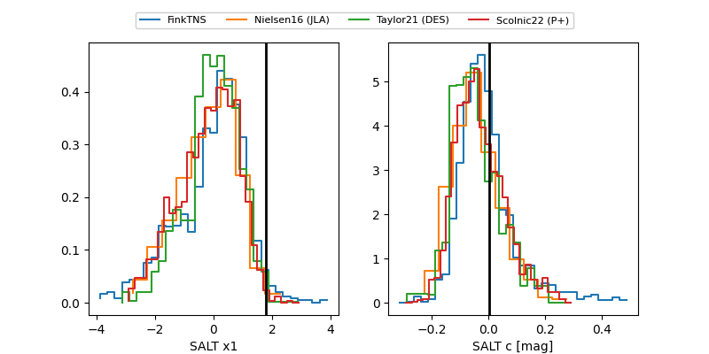

2026mlv
Target 2026mlv at 2026-05-29 12:16
Aliases and brokers:
lsst-FINK: link
lsst-Lasair: link
lsst-ALeRCE: link
ztf-FINK: link
ztf-Lasair: link
ztf-ALeRCE: link
TNS: link
YSE: link
alt names
ZTF26aawrfrp (ztf,fink_ztf)
2026mlv (tns,yse)
Coordinates:
equatorial (ra, dec) = 307.9004,-13.68490
equatorial (HMS+DMS) = 20:31:36.10,-13:41:05.65
galactic (l, b) = (31.4332,-28.28679)
Flags:
Photometry:
last atlasc=19.07, atlaso=19.05, ztfg=19.33, ztfr=19.03
4 atlasc, 1 atlaso, 2 ztfg, 5 ztfr detections
Lightcurve

Visibility


Additional plots
